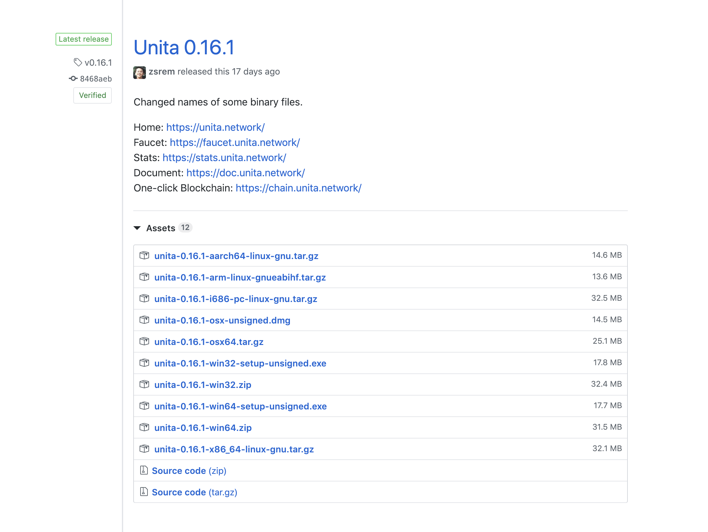
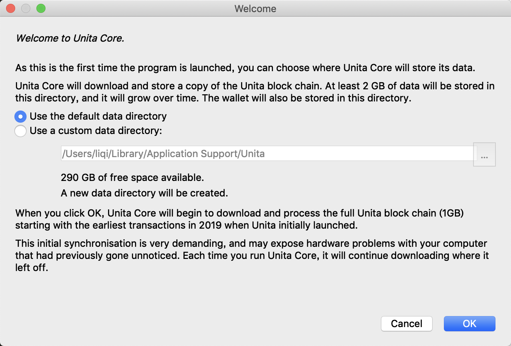
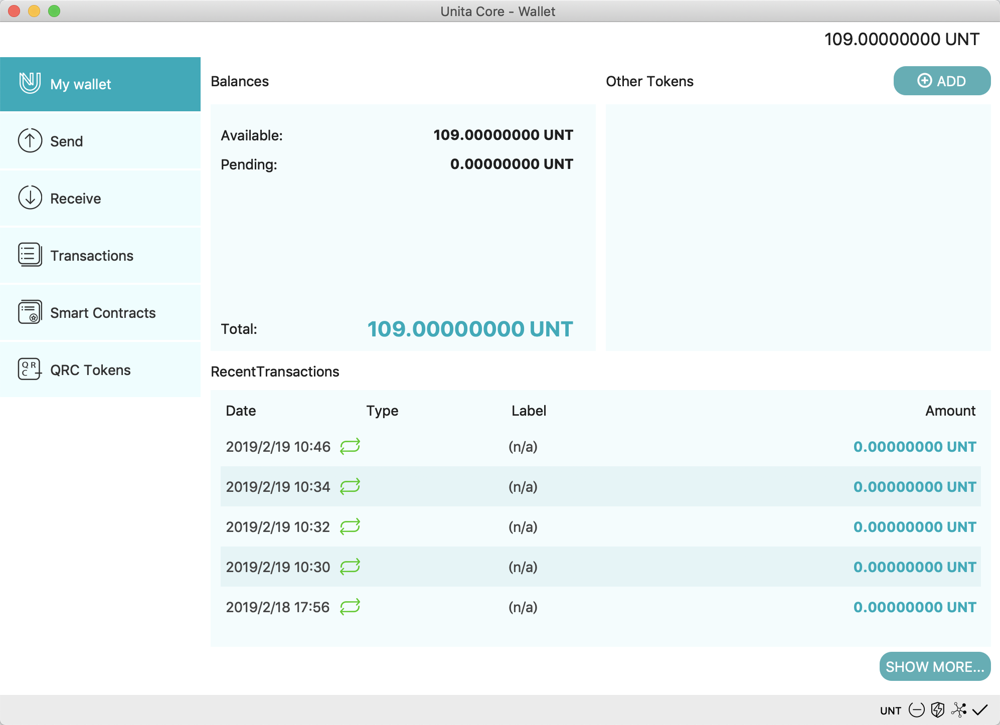
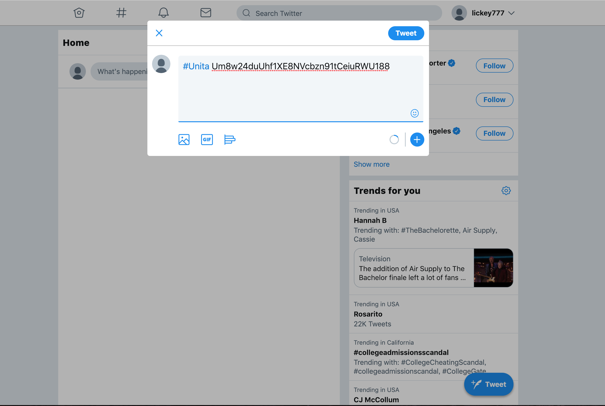
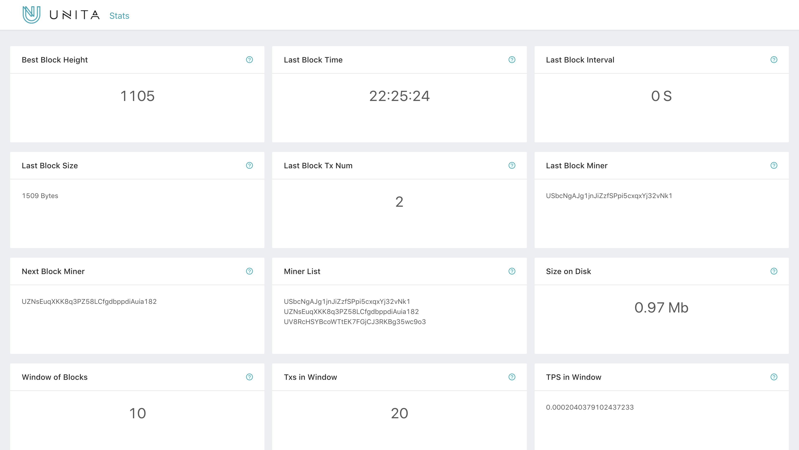
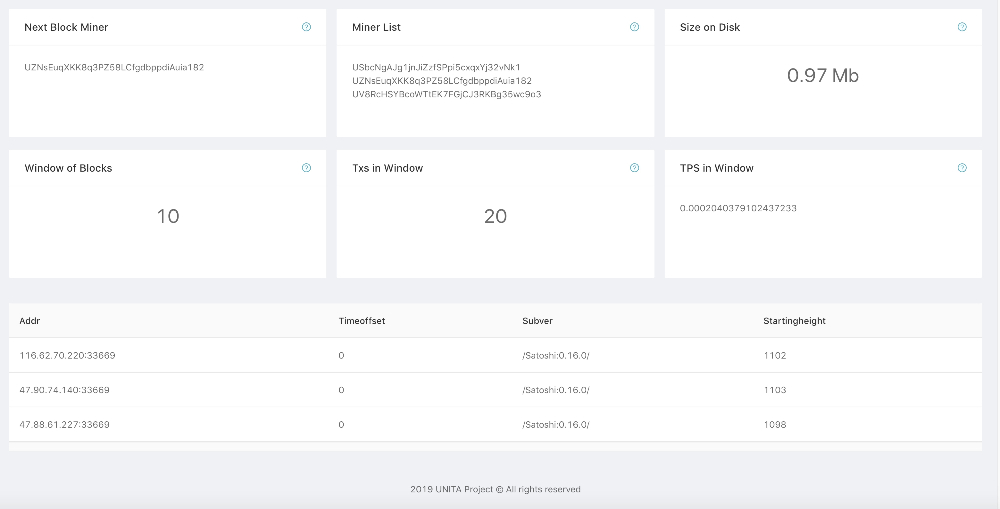
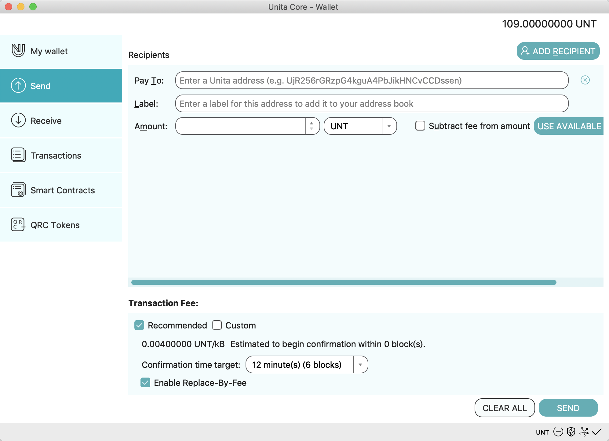

Unita Quick Start
Unita is the blockchain service provider based on open source project Qtum, provides enterprise application solutions that can be customized in various industries.
Unita is based on consortium blockchain, builds a main chain with many side-chains system architecture, integrate one-click-blockchain, cross-chain transaction, data management and other modules and diversified supporting tools to form a one-stop blockchain enterprise service.
We provide various services such as Unita full node wallet, faucet to get airdrop of UNT, blockchain explorer and blockchain stats,etc, to help you to use Unita.
Unita URLs are as follws：
Toolkits: Homepage, Qt-wallet download, Stats, Explorer, Faucet, One-click Blockchain.
Contents
- Download
- Run Wallet
- Use Wallet
- Get UNT through faucet
- Check transactions in Unita Explorer
- View Stats of Unita network
- Send Transactions
Download full node wallet
Find the latest release in Github and download wallet according to your device.

Run Wallet
Install the full node wallet and run it after downloaded. It will display window as picture below if there is no full node data existed, and then you should choose blockchain data path. You can use the defult path or custom it.

Click 'OK' to enter the main interface of qt wallet. Wallet will connect nodes of Unita main network and download data of Unita blockchain in defult. You can also change chainId in 'Preference'(Mac users) to connect other blockchain network launched in 'One-Click-Blockchian'.(See mor details in 'One-Click-Launch-Chain').

Use Wallet
If you own the privatekey of an Unita address with UNT, you can open Console in Help/Debug Window and input command "importprivkey 'unitaprivkey'" to import your address in wallet.

If not, maybe you should get an Unita address by 'REQUEST PAYMENT' button in Recieve page or by command "getnewaddress". You can export privatekey by command "dumpprivkey 'unitaaddress'" after you have got a new address.

Then, QT wallet will display some information such as balances in main interface:
- Balances
- Avaliable balance
- Pending balance
- Total balance
- Other Tokens
- Recent Transaction

Faucet
Enter Unita Faucet homepage.

Unita Faucet airdrops UNT by verifying Twitter or Sina Weibo, and process is following:
- Choose a social network to login
- Follow the example below to publish content(Twitter content is '#Unita +UnitaAddress', Sina Weibo content is '#Unita# +UnitaAddress')
- Copy content URL to the form above and click "Get Unita"
- Watch the in process transaction list below and wait
Let's take Twitter as an example. Log in your twitter account in https://mobile.twitter.com（https://mobile.twitter.com/ is Html5 version of Twitter, please use it so that you can get correct URL to get airdrop）.

Follow the example in Faucet page to publish content including your Unita address.

Copy URL of twitter you had published which included content example.

Paste content URL to the form above and click "Get Unita", then watch the in process transaction list below and wait（Correct form of URL is https://mobile.twitter.com/${name}/status/${id}）.
You will get UNT by Sina Weibo in the same way.
Notice: In order to prevent the malicious over-application of UNT, we adopted the verification of social media plus verification code, and limited the number of applications. Each time a successful application will receive 50 UNTs, and a social media account can only apply once within 24 hours. Meanwhile, we allow the same Unita address to be claimed through different social accounts.
Blockchain Explorer
Then, you have got UNT and you can watch status of your Unita addresses and details of transactions in blockchain in Explorer page.

Input Unita address in which you got airdrop of UNT in search field, then you will find transaction of recieving UNT in research results.

Meanwhile, you can watch detail information of each block and tokens launched through smart contracts in Unita Explorer. You will get balance ranking of UNT and stats of miner addresses, even you can send transactions through "Send Raw Transaction" in explorer.

Unita Blockchain Stats
You can view stats and status of Unita main network in Stats page, which includes best block height, best block size, TPS and so on. Status of Supernodes in Unita network is also available. 

Send Transactions
You can send transaction on the Send menu to realize to send certain number of UNTs to Unita address.

Pay To: Here we’ll enter the address we want to send UNT to (Only Unita ignition addresses will work).
Label: Optional, as it’s stated, it’s just a name/tag.
Amount: Here we enter the amount of UNT we want to send.
Once all fields are covered, we can click on the “Send” button and the UNT coins will be sent to the address we entered above.